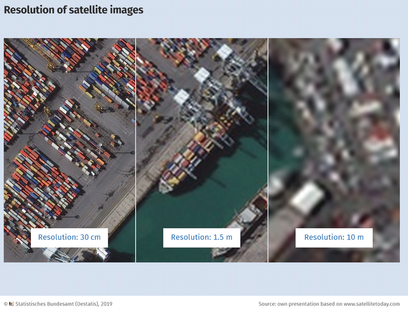

EO data quality criteria
Data quality criteria
Earth observation data often comes in raster-format, sometimes in vector-format. In order to assess the quality of a specific EO product and determine wether it is suitable for our specific research purpose, we need to be aware of a few terminologies. These are explained below. For researchers who regularly work with geographical data, these should sound familiar.
Major attributes of EO datasets
The list below summarizes the most important data quality criteria for EO data:
- Variable: Measuring the specific indicator of interest. This could be for example values of nighttime lights, GHG emissions like CO2 or CH4 from the Emission Database for Global Atmospheric Research (EDGAR), or landscape values like NDVI.
- CRS and projection: A Coordinate Reference System (CRS) is the framework for identifying locations. It defines how the two-dimensional map refers to actual places on the Earth’s surface. A CRS typically includes a datum (which defines the coordinate axes) and either uses geographic coordinates (latitude and longitude) or projected coordinates. Projected coordinates are based on mathematical methods to transform the Earth’s three-dimensional surface into a two-dimensional plane (the “map”). Any projection inevitably distorts some properties of shape, area, distance, or direction. Different projections focus on preserving different characteristics.
- Spatial resolution: The spatial resolution reports the granularity of the data. Finer granularity stores more detailed information. For gridded data, and depending on the measurement framework, the spatial resolution is either reported in angular units (degrees) that represent longitude and latitude in a spherical coordinate system or square (kilo-)meters projected into Cartesian coordinate systems. High-resolution airborne monitoring, for example, achieves a spatial resolution at or below 1x1m. Publicly available data products derived from satellite data are often much more coarse with values of 1x1km or larger, like the Open-source Data Inventory for Anthropogenic CO2 (ODIAC). The spatial resolution of georeferenced data which is stored in vector-format refers to the detailedness and aggregation level of data in points, lines, and polygons. For example, is pollution data stored for each individual emitting factory in point location or as regional or national averages?
- Spatial coverage: The spatial coverage (or scope/extent) refers to the extensiveness of data across the globe. The delineation of coverage can be based on the exact spatial extent of gridded data, or on administrative units like regions and countries.
- Temporal resolution: Similar to the spatial resolution, the temporal resolution records the intervalls at which information is stored. (Near-)real-time data from public sources have hourly or daily intervals. Many datasets also provide monthly or yearly averages.
- Temporal coverage: The temporal coverage (or scope/extent) means the time period, which is covered by the dataset. Given that many remote sensing and satellite programs have emerged only recently, the temporal coverage of observational data is limited. Fortunately, reanalysis programs, simulation studies, and data fusion projects have extended the historical coverage of many EO indicators considerably. Check out, for example, the Community Emissions Data System (CEDS), which has produced annual estimates of several anthropogenic emission species over the entire industrial period from 1750!
- Measurement type: EO data can be collected through different channels. Bottom-up approaches like direct reporting of emissions based on in-situ sensors or estimations of point sources can offer high accuracy but often lack broad coverage. In contrast, top-down approaches based on remote sensing can generate global coverage at risk of accuracy issues. Many data products integrate different data sources and apply additional techniques to increase data quality through simulation studies, data fusion, or reanalysis.
- Processing level: The processing level describes how much pre-processing of the original raw data has been involved. Levels are often classified from 0 (raw) to 4 (model output). As endusers, we are normally accessing data products at level 2 or 3, which represent derived geophysical variables mapped on uniform space-time grid scales and checked for completeness and consistency. For more information, see NASA’s description here.
Data quality assessment
Comming soon
